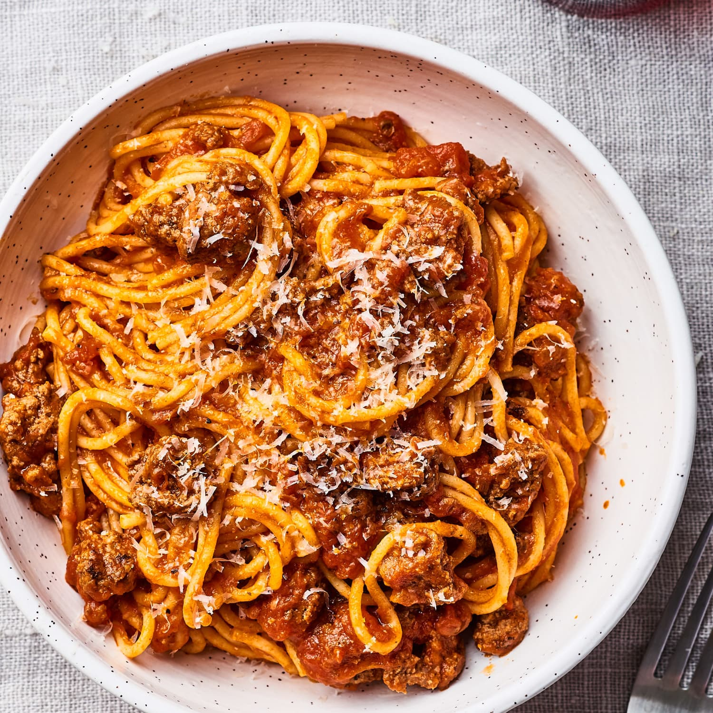

Spaghetti

spaghetti, thin, straight, cylindrical pasta of Italian origin, the most popular of all pastas eaten today.
Noodles made of wheat and eggs were known in the Mediterranean world in antiquity, but the pasta we know as spaghetti—which takes its name from the Italian spaghetto, “little cord”—was probably introduced to Sicily by the island’s Arab conquerors in the 8th century. The name was first recorded in 1874, however, suggesting that spaghetti may have remained a regional dish until shortly after the unification of Italy. Spaghetti was likely eaten with butter and cheese until about that time too; although the tomato was introduced to Italy as part of the Columbian Exchange, it was not widely eaten until the 19th century.
Igredients
- Spaghetti
- Sauce
- Olive Oil
- Chopped Bacon
- Onions
- Carrots
- Colery sticks
- Garlic cloves
- Sprigs Rosemary
- Tomatoes
- Dried Oregano
- Bay leaves
- Tomato purée
- Beef stock cube
- Deseeded
- Red Chilli
- Red Wine
- Halved cherry tomatoes
- Parmesan
Prepare Steps
- Put a large saucepan on a medium heat and add 1 tbsp olive oil.
- Add 4 finely chopped bacon rashers and fry for 10 mins until golden and crisp.
- Reduce the heat and add the 2 onions, 2 carrots, 2 celery sticks, 2 garlic cloves and the leaves from 2-3 sprigs rosemary, all finely chopped, then fry for 10 mins. Stir the veg often until it softens.
- Increase the heat to medium-high, add 500g beef mince and cook stirring for 3-4 mins until the meat is browned all over.
- Add 2 tins plum tomatoes, the finely chopped leaves from ¾ small pack basil, 1 tsp dried oregano, 2 bay leaves, 2 tbsp tomato purée, 1 beef stock cube, 1 deseeded and finely chopped red chilli (if using), 125ml red wine and 6 halved cherry tomatoes. Stir with a wooden spoon, breaking up the plum tomatoes.
- Bring to the boil, reduce to a gentle simmer and cover with a lid. Cook for 1 hr 15 mins stirring occasionally, until you have a rich, thick sauce.Add the 75g grated parmesan, check the seasoning and stir.
- Add the 75g grated parmesan, check the seasoning and stir.
- When the bolognese is nearly finished, cook 400g spaghetti following the pack instructions.
- Drain the spaghetti and either stir into the bolognese sauce, or serve the sauce on top. Serve with more grated parmesan, the remaining basil leaves and crusty bread, if you like.
- Be Happy :)